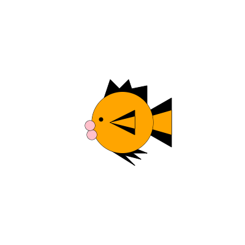

This is Earnest. Earnest is a goldfish. He has been through many adventures. One of his first adventures was when an art student bought seven of his brothers and sisters and him for an art project. Due to the fact that goldfish cannot remember more than three months of their past, Earnest cannot remember where it was he lived before. After the art project, he was given to another art student and was named for a favorite teacher. This art student brought him home to a house full of three sisters who had a poodle. The art student's sister's have renamed him about four times and settled with Val. He lives in a large bowl looking out a window, and watches the world go by.
